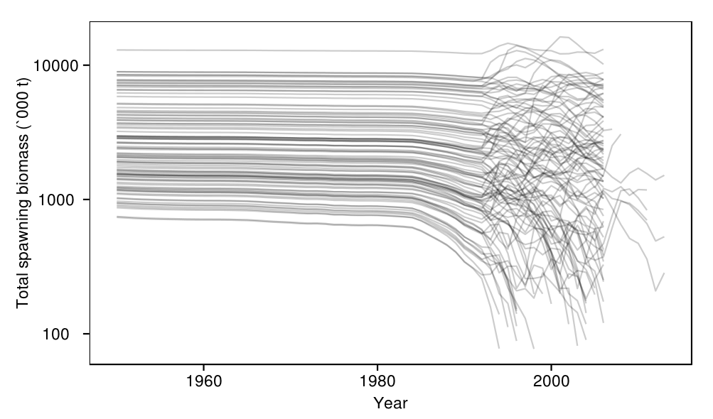
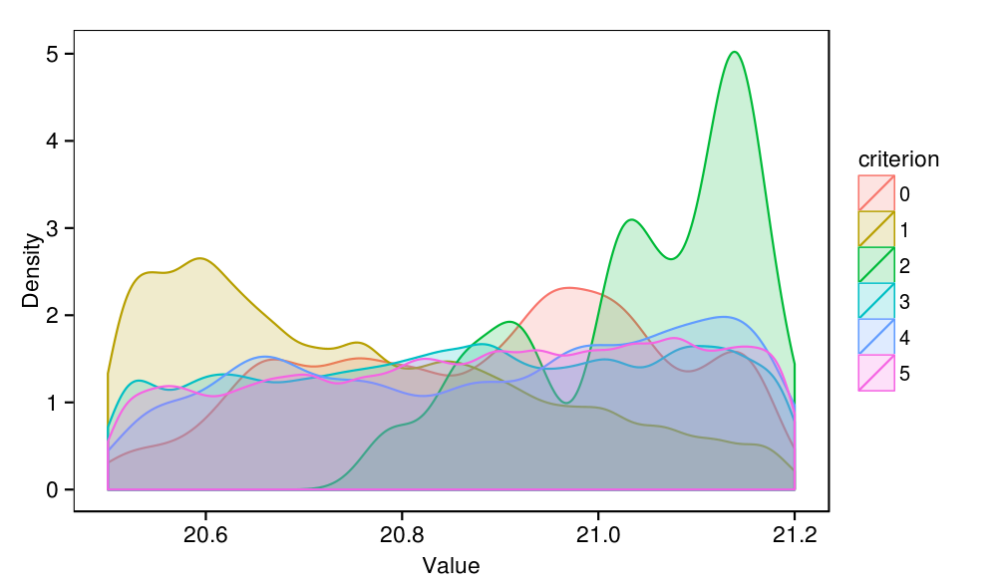
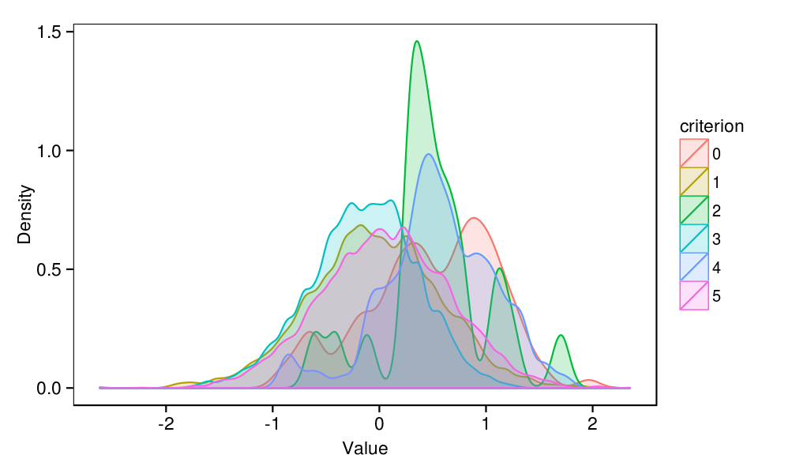

DRAFT
This documentation is a draft under active development. As such, it may not exactly mirror what is in the current version of the code. Separate documentation, generated from the model's C++ source code, is also available .
Introduction
This document presents the results from the
feasible
task. This task performs model conditioning using the Feasible Stock Trajectories (FST) algorithm (Bentley and Langley 2012). Rather than estimating parameters using full likelihoods, FST uses feasibility criterion to accept or reject sets of parameters drawn from their prior distributions. Feasibility criteria can be based on a priori beliefs about the stock or on "features" of the observed data. FST is an unsophisticated, brute force method but provides a means of pragmatically conditioning an operating model.
N Bentley, AD Langley (2012) Feasible stock trajectories: a flexible and efficient sequential estimator for use in fisheries management procedures. Canadian Journal of Fisheries and Aquatic Sciences 69 (1), 161-177.
source('../../common.R',local=T)
require(stringr)
load(c(
'accepted',
'rejected',
'track'
),from='../output')
rejects <- table(rejected$criterion)
| Code | Criterion | Trials failing this criterion |
|---|---|---|
| 1 | Stock status must always be >10% B0 | 2128 |
| 2 | Stock status must be less than 100% B0 since 2008 | 22 |
| 3 | Maldive PL CPUE must increase from 2004 to 2006 | 2046 |
| 4 | Maldive PL CPUE must decrease from 2004 to 2011 | 107 |
| 5 | Z-estimates for 50-55cm fish between 2006 and 2009 must be between 0.2 and 0.7 | 5584 |
print( ggplot(subset(track,quarter==0),aes(x=year+quarter/4,y=biomass_spawning_overall/1000,group=replicate)) + geom_line(alpha=0.2) + scale_y_log10() + labs(x="Year",y="Total spawning biomass (`000 t)") )
plot_densities <- function(param){
name <- paste0(param,".value")
values <- rbind(
data.frame(value=accepted[,name],criterion=0),
data.frame(value=rejected[,name],criterion=rejected$criterion)
)
values$criterion = factor(values$criterion)
print(
ggplot(values,aes(x=value,fill=criterion,colour=criterion)) +
geom_density(adjust=1/2,alpha=0.2) +
labs(x="Value",y="Density")
)
}
plot_densities(param)
plot_densities(param)
plot_densities(param)
plot_densities(param)
plot_densities(param)
temp <- melt(accepted[,paste0("recruits_deviations.",1990:2012,"..value")])
temp$year <- str_extract(temp$variable,"\\d+")
print(ggplot(temp,aes(x=year,y=value)) +
geom_violin(fill='grey') +
geom_point(data=ddply(temp,.(year),summarise,y=mean(value)),aes(y=y)) +
geom_hline(y=0,linetype=2) +
labs(x='Year',y='Value'))
recruits_deviations
parameters that passed all feasibility criteria. The dots represent the mean of each distribution.